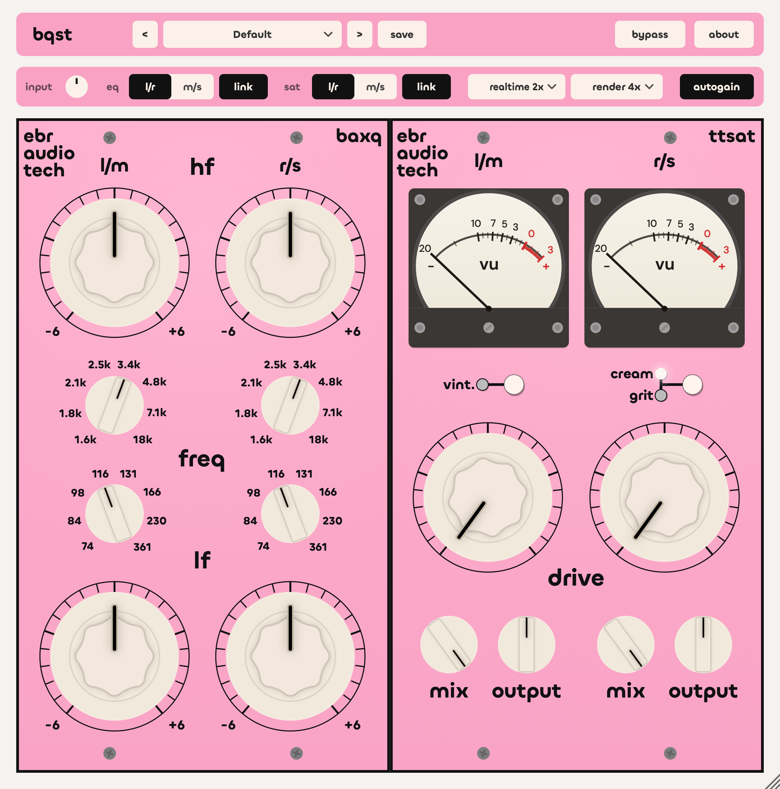
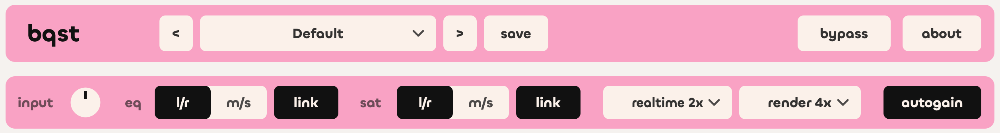
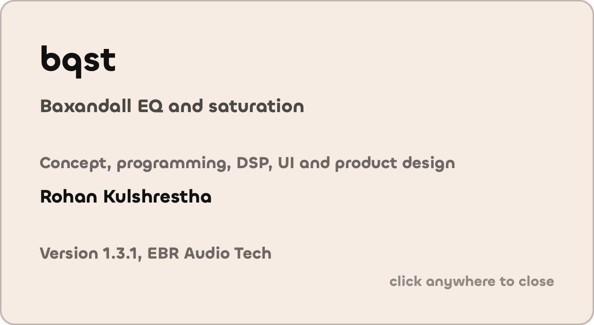
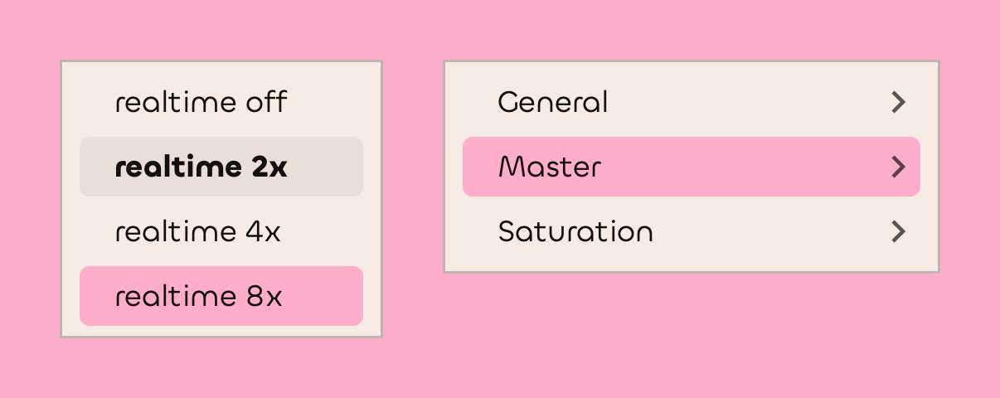
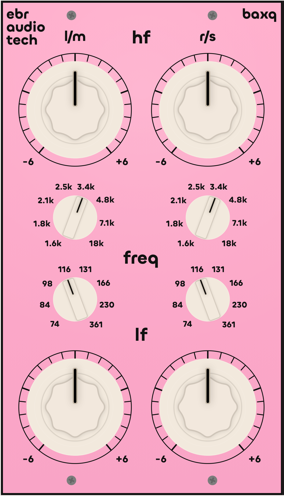
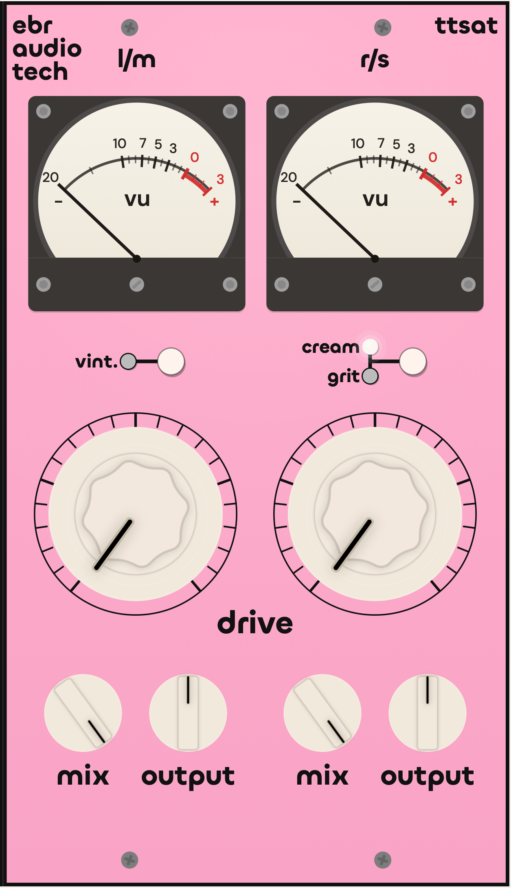
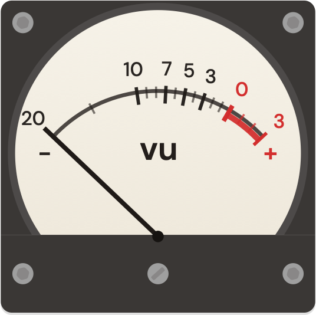
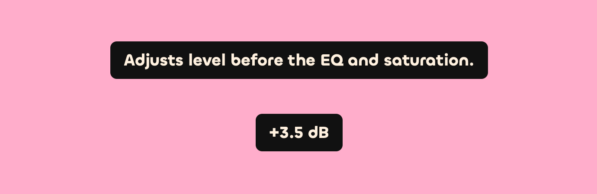

A mastering tone plugin: a broad, gentle EQ feeding a two-flavour saturation stage. Made for lift, weight and glue on the mix bus and master, not for turning things into a distortion box.

BQST is a stereo mastering EQ and saturator laid out like two modules in a 500-series rack. On the left, a broad Baxandall-style low and high shelf EQ. On the right, a saturation stage with two characters, Cream and Grit, and a pair of VU meters.
Both modules have two columns of controls. They can work on the left and right channels, or on the mid (what the two speakers share) and the side (what differs between them). The EQ and the saturation each choose this for themselves.
Sound passes through the plugin in this order:
It is built for small moves: a decibel of shelf, a few decibels of drive. Turned all the way up it will happily get loud and dirty, but its sweet spot is the kind of colour you feel more than hear.
BQST runs on macOS. The installer puts two plugin formats in the system plugin folders, so every host on the Mac can find them.
| format | installed to | use it in |
|---|---|---|
| VST3 | /Library/Audio/Plug-Ins/VST3/BQST.vst3 | Ableton Live, Reaper, Bitwig, Cubase and most other hosts |
| Audio Unit | /Library/Audio/Plug-Ins/Components/BQST.component | Logic Pro, GarageBand and other AU hosts |
After installing, open your host and, if it does not see BQST straight away, ask it to rescan its plugins. BQST appears under the maker name EBR Audio Tech. A standalone app can also be built from the source code; the installer does not include it.
The factory presets are built into the plugin, so there is nothing else to copy. Presets you save yourself live in your user Library (see chapter 5).
BQST is happiest at the end of a chain: on the master bus, a mix bus, or a group of instruments that should sit together. Put it after corrective EQ and dynamics, and before your final limiter, so the limiter sees the colour BQST adds.
When you first load BQST, every EQ gain and both Drives are at 0, so it adds no EQ and no saturation. Nothing changes until you turn something.
Each module has an l/m column and an r/s column. In l/r mode they are the left and right channels; in m/s mode they are the mid and the side. Hover over any control to see what it does, or over a knob to read its exact value.

The small input knob sets the level going into the EQ and saturation, from −12 to +12 dB. Because saturation responds to level, more input means more colour, much like Drive.
Hold Control while you drag Input and both Output knobs move the opposite way by the same amount, so you change how hard the plugin is driven without changing how loud it comes out. Control-double-click Input to set both Outputs back to 0 dB.
The l/r m/s switch next to eq chooses whether the EQ works on left and right or on mid and side. The one next to sat does the same for the saturation. They are independent, so you can, for example, EQ in m/s and saturate in l/r.
Each module has a link button, and both are on in a new instance. While a module is linked, its r/s column simply follows the l/m column: both columns show and change the same settings. For the EQ that covers both gains and both frequencies; for the saturation it covers Drive, Mix and Output.
Turn link off when you want the two sides to differ, for instance a little more air on the side channel only. When you switch it off, the r/s column starts from the l/m settings, so nothing jumps. With link off you can still hold Control while dragging a knob to move both sides together.
While a module is linked, any automation you recorded on its r/s controls is ignored. The Cream/Grit switch always sets both sides, linked or not.
Two menus set how much oversampling the saturation uses: realtime while you play and mix, render when you bounce or export. Each offers off, 2x, 4x or 8x. See chapter 9.
With autogain on (the default), BQST turns the saturated signal down as you turn Drive up, so you can judge the change in character rather than just hearing it get louder. It is a fixed correction for each Drive setting, measured beforehand on several kinds of music. It does not listen to your track, so the match is close but varies with the source. Turn it off if you want Drive to push level as well.
bypass switches the whole plugin out with a short fade, so it never clicks, and dims the faceplate so you can see at a glance that it is off. It is the fairest way to compare before and after, especially with Autogain on.

The about button at the top right shows the version number and credits. Click anywhere on the panel to close it again.
If you ever need to check which version a session is using, this is the place to look.

The preset row sits at the very top of the window. Click the preset name to open the menu, or use < and > to step through the presets one by one.
save stores the current settings as your own preset. Your presets appear in the same menu, in a user section under the factory ones.
| preset | category | what it does |
|---|---|---|
| Default | General | Everything at its starting point: flat EQ, no drive. |
| Clean Bax Lift | Master | A gentle lift at both ends with a touch of Cream. |
| Wide Air MS | Master | EQ in m/s and unlinked: more top on the side channel than the mid. |
| Subtle Master Polish | Master | Small shelves and a little Cream, mixed in at under half. |
| Cream Glue | Saturation | More Cream drive, partly mixed, with Vintage on. |
| Cream Sheen | Saturation | Light Cream with a small high and low lift. |
| Grit Console Push | Saturation | Grit at a moderate drive, mixed in a little over half. |
User presets are saved as .bqstpreset files in this folder:
~/Library/BQST/Presets
You can copy them to another Mac, or share them, by copying the files. Subfolders show up as their own groups in the menu.
Presets store the sound: EQ, saturation, routing, link, Vintage and Autogain. They do not store the window size, the two oversampling settings or Bypass, so loading a preset never changes how your session is set up to run.

Two broad shelves: one for the top, one for the bottom. They are wide and smooth on purpose, so they shape the overall tone rather than fixing single problem frequencies.
Boosts or cuts everything above the chosen high frequency, from −6 to +6 dB. Small moves go a long way: half a decibel to a decibel is often plenty on a master.
The upper small knob picks where the high shelf starts:
1.6k 1.8k 2.1k 2.5k 3.4k 4.8k 7.1k 18k
The lower one picks where the low shelf starts (in Hz):
74 84 98 116 131 166 230 361
A new instance starts at 4.8k and 116 Hz. A low high-shelf frequency brightens the whole upper mid; 18k only adds air at the very top. Likewise, 74 Hz adds weight to the sub and kick, while 361 Hz warms up the whole lower half.
Boosts or cuts everything below the chosen low frequency, from −6 to +6 dB.
Switch the EQ to m/s and turn link off, and the l/m column shapes the centre (vocals, kick, bass) while the r/s column shapes the sides (wide pads, reverbs, overheads). Adding a little HF to the side only is a classic way to open up a mix without making the vocal harsher.
Saturation is what analogue gear does when you lean on it: it rounds off peaks and adds harmonics, new overtones above the notes that are already there. A little makes things sound denser and more finished.
Click the cream / grit switch to change the saturation type. It always sets both sides at once.
Smooth and dense, in the op-amp tradition. It thickens the low end, adds harmonic richness through the mids and top, and rounds peaks gently.
It goes from transparent at 0 dB of Drive to heavily saturated at 18 dB, and each step of the knob adds a similar amount, so subtle settings get plenty of travel. It is the default.
A firmer, transformer-style saturation with more bite and a harder edge.
Where Cream thickens, Grit pushes forward: it brings out the attack of drums, guitars and vocals and gives a mix a more solid, driven edge as Drive goes up.
As a rough guide, Cream suits weight and glue, and Grit suits edge and presence.
The vint. switch softens the top end of the saturated sound with a broad, gentle shelf, a little like older gear. It only touches the saturated signal, so it does nothing while Drive or Mix is at 0, and it fades in over the first 6 dB of Drive.

The big knobs set how hard each side is pushed, from 0 to 18 dB. At 0 dB the saturation is effectively out of the circuit. With link on, one knob drives both sides.
Blends the saturated sound with the clean sound, from 0 to 100%. At 100% (the default) you hear only the saturated signal. Pulling Mix back lets you drive harder for more character while keeping the clean transients underneath.
Sets the final level of each side, from −16 to +16 dB. Use it to match the level with Bypass so that comparisons are fair.
With autogain on in the top bar, turning Drive up changes the character much more than the loudness. Output is for the final trim on top of that.

The two meters show the level leaving the saturation module, one for each side, after Mix and Output.
They are calibrated so that 0 VU = −18 dBFS. A needle sitting around 0, sometimes nudging into the red, means a healthy level going into whatever comes next.
Like the meters on analogue gear, they show average level and move smoothly, taking about 300 ms to settle. They are for judging loudness and balance by eye, not for catching peaks: keep a peak meter or your limiter for that.
In m/s mode the left meter shows the mid and the right meter shows the side, so you can see how wide the saturated signal is.
Saturation creates new high harmonics. If they go above what the sample rate can hold, they fold back down as harsh, unmusical tones called aliasing. Oversampling runs the saturation at a higher rate to keep them clean.
| menu | used when | choices | starts at |
|---|---|---|---|
| realtime | normal playback and mixing | off, 2x, 4x, 8x | 2x |
| render | offline bounce or export | off, 2x, 4x, 8x | 4x |
Higher settings sound cleaner when you drive hard, especially with lots of high-frequency content, but use more CPU. Having two menus lets you keep playback light and still bounce at the best quality. Only the saturation is oversampled; the EQ always runs at your session's own rate, so its curves do not change with these menus.
Oversampling adds a small delay, which BQST reports to the host so that it can line everything up. Changing a setting is handled with a very short fade, so it does not click.
Leave realtime at 2x while you work. Set render to 4x or 8x for the final bounce. If your computer struggles with a large session, realtime off is fine for light drive settings.
Drag the striped grip in the bottom-right corner of the window to make BQST any size you like, from three quarters of its normal size up to twice its normal size. The window keeps its shape as you drag, and it stops growing when it reaches the bottom of your screen, so the grip stays in reach. Double-click the grip to go back to the normal size.
The size is saved with your project, so it opens the same way next time. It is not part of presets.
| to do this | do this |
|---|---|
| Change a knob | Drag it up or down (or left and right). |
| Fine adjustment | Hold Shift while dragging. |
| Reset a knob | Double-click Input, HF, LF, Drive, Mix or Output to return it to its default (0 dB, or 100% for Mix). The frequency knobs have no double-click reset. |
| Read a value | Hover over a knob; the value also shows while you drag. |
| See what a control does | Hover over it for a short description. |
| Drive harder, same loudness | Control-drag Input; both Outputs move the opposite way. |
| Reset both Outputs | Control-double-click Input. |
| Move both sides together | With link off, Control-drag a knob. |
| Undo / redo | ⌘ Z undoes the last change made in the BQST window; ⇧ ⌘ Z redoes it. |

Made by Rohan Kulshrestha, EBR Audio Tech. BQST is free to download from rohanjk.xyz/projects/bqst.